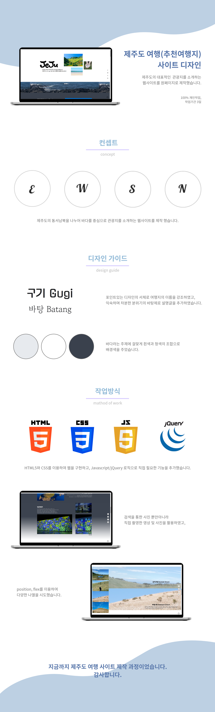

- Name : 최이로운
- Birth : 1993. 01. 19.
- Address : 서울시 강서구 방화동
- Phone : 010-9567-5361
- Email : iirowoonii@gmail.com
로딩중
CHOI IROWOON
MORE BENEFICIAL MORE SENSIBLE
이로움을 전파하는 웹퍼플리셔 최이로운입니다.
감각적이고 접근성 좋은 디자인을 겸비한 시멘틱 웹사이트 구축을 위해
항상 한걸음 더 나아가겠습니다.
- 이 사이트는 pc와 mobile 화면에 적합하도록 반응형으로 제작되었습니다.
스크롤바를 내리면 작품을 감상할 수 있습니다.
ABOUT ME
VISION
눈길이 가는 웹 구축을 하는 섬세한 퍼블리셔가 되고 싶습니다.
퍼블리셔로써 저의 목표는 감각적으로 디자인한 HTML, CSS와 깔끔한 Javascript, jQuery로직으로
사이트으로 하여금 브랜드의 아이덴디티를
보여주는
것입니다.
저를 믿고 일을 맡길 수 있게 늘 노력하겠습니다.
본인의 업무면에서 뒤쳐짐없으며, 동료들과의 협업에 있어서 원만한 대인관계를 유지하는 것이
회사의 일원으로써의 개인에게 가장 필요한 자질이라고 생각합니다.
하나의 직원으로써 도움이 되며, 퍼블리셔로써 트렌드를 이끌고 통찰력있는 사람이 되겠습니다.
WHAT CAN I DO
시멘틱 웹을 구현하고 군더더기 없는 디자인을 하기 위해 항상 노력하고 있습니다.
XD를 이용하여 사이트 시안 작업을 할 수 있고,
HTML5 & CSS3를 ZenCoding(EMMET), SCSS로 코딩할 수 있으며, 필요한 기능들을
Javascript/jQuery로 구현이
가능합니다.
저의 장점은 이용자가 사이트에 대한 좋은 경험만 남길 수 있도록
브랜드의 아이덴디티를 파악하고 클라이언트의 의견을 수렴하여 UX/UI 디자인을 하는
것입니다.
아는 것에 그치지 않고, 더 발전시키며 새로운 것을 배우는 자세로 임하겠습니다.
- ZenCoding(EMMET) & SCSS
- Javascript & jQuery 로직구현
- MVC 패턴의 페이지 구성
- 반응형 웹디자인
- HTML5 DTD 유효성 검사 통과
- 웹접근성을 향상시킨 시멘틱 페이지
WORK STYLE
- 구조와 디자인, 기능을 분리한 MVC패턴을 구현
- 자바스크립트와 jQuery를 구현
- HTML5 시멘틱과 CSS3 웹페이지를 구현
OTHER SAY
-
따라
상황 판단을 잘하고 배려심이 넘치는 똑부러지는 친구상황에 따라 객관적으로 분석하여 해결책을 알려주기도 하고, 감정적인 것에 따뜻하게 공감하기도 하는 다재다능한 감성의 소유자이다. 세심함에서 비롯한 배려가 습관화 된 사람이다. 어려운 일도 이 친구와 상의한다면 쉬운 일이 될 거 같은 느낌!
-
승쟝
Fast learner. Steady listener.빠르고 날카로운 통찰력으로 유연하고 둥그런 세상을 그리는 창의적이고 감각적인 사람입니다. 모두에게 선한 영향력을 끼치며, 받아들인 것을 자신의 것으로 만드는 능력이 탁월하여 열심히 나아가는 밝은 모습에 늘 웃음짓게 하는 친구입니다.
-
몽디
함께 이야기를 나누는 시간이 늘 즐거운 사람배려가 자연스러운 친구, 그러면서도 자신만의 단단함이 잘 자리잡고 있어 따뜻하고 든든한 친구가 되어줍니다. 잘 쌓아온 단단함으로 주변 사람들에게 신뢰감을 주고, 자신이 해내고자 하는 것을 실천할 줄 아는 사람이라고 생각합니다.
SKILL
탁월한 UX분석능력과 Emmet/Zencoding 활용
-
UX/UI 디자인
사용자의 Context와 Needs를 파악하고
Problem을 해결할 수 있는 Insight 도출 -
반응형 웹표준
시멘틱을 지향하는 HTML/CSS 작성능력 보유,
자바스크립트와 제이쿼리 기반의 로직 구현 가능
SASS 전처리기와 리액트 라이브러리 활용
-
Sass Preprocessor
협업 웹코딩의 필수 기술인 SCSS를 이용한
CSS 스타일링을 원활이 사용 가능 -
React
국내 프론트엔드 시장의 대세 리액트 코드구현,
자바스크립트와 제이쿼리 기반의 로직구현 가능
ABILITY
젠코딩
HTML5
CSS
jQuery
웹기획
디자인
99%
협동력
적극성
창의력
사교성
책임감
정직성
온라인 이력서
어느 인터넷 강사가 꿈은 동사로 끝 맺어져야 한다고 했습니다.
흔히들 말하는 변호사, 가수, 선생님, 디자이너는 직업이지 꿈이 아니라고요.
꿈은 그 직업, 일을 통해 이루고자 하는 삶의 목표라는 것입니다.
이름에 걸맞게 사는 것이 제 꿈입니다.
제가 만든 사이트가 이용에 도움이 되고 혹은 편의를 줄 수 있음을 실현하는 것으로
저의 꿈을 이루고자합니다.
단 한 가지 일을 해내더라도 영향력 있는 힘을 기르기 위해 겸손히 배우고,
앞으로 나아가겠습니다.
UX DESIGN
작품리스트
이전 다음내가 생각하는 사용자경험 - User Experience
통용되어진 의미의 UX(User Experience)란, 사용자 경험은 사용자가 제품과 서비스, 시스템, 정책 등을 직접 혹은 간접적으로 이용하는 과정에서 발생하는 총체적
경험을 의미한다.
내가 생각하는 UX디자인이란, 제품 디자인의 주요소를 사용자가 어떤 제품, 서비스 등을 이용함으로써 발생하는 긍정적, 부정적 경험들, 상호작용들로 고려하는
것이다.
사용자로 하여금 긍정적인 경험을 할 수 있도록 상호교감을 창조하고 개발하는 분야로 모든 디자인의 영역에 있어서 필수적인 부분이다. 우리는 사용자가
어떤 부분에 부정적이고, 불편해하며, 무엇이 필요한지 끊임없이 조사하고 발전 시켜야한다.
버스 이동방향 화살표 스티커
디자인과 UX의 차이
- 1. 에코백
-
에코백 여러가지를 조합하여
코스터로 업사이클링(Upcycling)한 사례
- 2. 물티슈 보호 캡
-
오염, 수분증발을 방지하는 물티슈 보호
캡을 남은 과자 보관용 덮개로 활용한 사례
PORTFOLIO
소니스토어 (클론사이트)
Sonystore clone site
기존의 웹사이트를 클론사이트 작업으로 구현했습니다.
네비게이션과 슬라이드 작업 능력을 확인 할 수 있으며,
트랜지션, 애니메이트 사용의 이해도 또한 증명할 수 있습니다.
작업프로그램 : Visual Studio Code
100% 개인 작업
COS (클론사이트-반응형)
COS mainpage clone site
기존의 웹사이트를 클론사이트 작업으로 구현했습니다.
media query를 이용한 반응형 사이트로
PC용과 mobile용 사이트를 확인할 수 있습니다.
작업프로그램 : Visual Studio Code
100% 개인 작업


국립현대미술관 (클론사이트)
국립현대미술관 clon site
기존의 웹사이트를 클론사이트 작업으로 구현했습니다.
javascript및 jQuery로직으로 검색창을 만들었습니다.
슬라이드 제작 이해도 또한 증명할 수 있습니다.
작업프로그램 : Visual Studio Code
100% 개인 작업

제주여행(추천여행지) 사이트 디자인
JEJU Island TRAVEL Site Design
동서남북의 카테고리로 구분하여 제주의 명소를 소개하는 원페이지
형식의 사이트를 제작하였습니다. 제주도의 바다를 위주로 구성된
콘텐츠를 중심으로했으며, 직접 찍은 사진을 포함하고 있습니다.
작업프로그램 : Visual Studio Code
100% 개인 작업

필요한 기능을 직접 javascript/jquery 로직 구현
‘스타일을 창조하여 그것을 섬세한 디자인으로 탈바꿈 시키고싶다’ 는 마음으로 매일 노력하고 있습니다.
HTML5 & CSS3 시멘틱 페이지를 SCSS, ZenCoding(EMMET)으로 작성할 수 있습니다.
클라이언트의 요구사항을 적극적으로 반영하는 UI/UX 디자인 능력은 저의 최고의 장점중 하나입니다.
JS 플러그인을 사용에 그치지 않고 필요한 기능을 직접 구현할 수 있는 Javascript/jQuery 로직구현이 가능합니다.
새로운 코딩기법과 디자인을 배우는 것이 정말 즐겁습니다.
for문과 다중 if문의 결합한 로직 구현
SASS, Emmet 활용
페이지 전체의 계층구조를 입체적으로 분석할 수 있는
실무형 코딩기법 Emmet을 사용할 수 있어 업무시간을 단축시킬 수 있을뿐 아니라,
유지보수도 더욱 쉽고 정확하게 처리할 수 있습니다.
SCSS의 가장 큰 장점인 변수와 Mixin 기능을 적극 활용하여
CSS 스타일링을 할 수 있습니다.
Sprite-Image와 IR(Image Replacement)기법에 능숙
id, class를 남발하지 않고 원하는 요소를 셀렉팅할 수 있는 능력,
CSS3 Transform, Transition, Keyframes을 이용한 애니메이션 효과 구현
직접 구현한 슬라이드
CONTACT
귀사에 입사를 지원합니다.
저의 웹퍼블리싱 이야기 입니다.
질문을 선택하시면 정리된 답변을 보실수 있습니다.
- 1. html5의 가장 큰 특징은에 대해 설명하시오. 화살표
-
HTML5는 기존의 모든 문서 타입을 래핑하고, 시멘틱 마크업을 위한 의미적 요소들이 강화되었으며, 생산성이 향상된 코딩을 지원하면서 문서의 크기가 작아졌다는 특징이 있습니다.
- 2. 웹표준, 웹접근성, 시멘틱웹에 대해 설명하시오. 화살표
-
1. 웹 표준이란, 웹 표준화 단체(W3C)가 권고한 표준안을 뜻하며 용도에 맞는 태그 사용과 CSS를 분리(구조와 표현의 분리)하여 작업하는 것을 말합니다.
2. 웹 접근성이란, 사람의 신체 조건과 상관 없이 모든 환경에서 웹 콘텐츠를 이용할 수 있어야 하는 것을 말합니다.
3. 시맨틱 웹은 semantic이라는 단어 그대로 의미론적인 웹을 의미하는 것으로, 태그 자체가 가지고 있는 의미에 맞게 HTML 문서를 작성하여 브라우저, 혹은 컴퓨터가 이해할 수 있는 문서를 작성하고자 하는 것입니다. - 3. 자바스크립트 라이브러리 사용시 가장 큰 장점은? 화살표
-
자바스크립트 라이브러리 사용시 장점은 단축된 문법사용과 멀티 브라우저 지원이라 생각합니다. 어느 브라우져에서나 동일하게 작동을 한다는 것은 자바스크립트 개발자로서 너무나 매력적인 일입니다.
- 4. .setInterval() 함수에 대해 설명하시오. 화살표
-
setInterval() 함수는 어떤 코드를 일정한 시간 간격을 두고 반복해서 실행하고 싶을 때 사용합니다. 첫번째 인자로 실행할 코드를 담고 있는 함수를 받고, 두번째 인자로 반복 주기를 밀리초(ms) 단위로 받습니다.
- 5. CSS 미디어쿼리는 어떤 역할을 수행하는지 답하시오. 화살표
-
미디어 쿼리(mediaqueri)는 사이트에 접속하는 장치에 따라 특정한 CSS 스타일을 사용하도록 도와주는 소프트웨어 모듈입니다. 미디어 쿼리를 이용한 사이트는 웹 사이트에 접속하는 기기에 따라서 레이아웃이 바뀌게 됩니다.
더욱 궁금하신 점은 면접시 말씀드리겠습니다. 감사합니다!
본 페이지는 저의 개인 포트폴리오용으로 제작되었으며, 상업적인 목적과 관련이 없음을 알려드립니다.